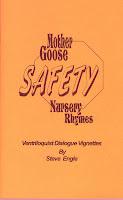

99 Cent Book Auctions
11/22/2009
Just a reminder - every week I select a group of ventriloquist subject books from my remaining Maher Studios inventory to be offered on eBay with 5 day auctions starting at just 99 cents (free shipping). You'll find a quick link to all auctions below. Auctions begin on Wednesdays and end on Mondays.
To see details and photos of all my current auctions, Click Here.
The following is from Steve Engle's Mother Goose SAFETY Nursery Rhymes (copyright 1998 bt Steve Engle) and for sale now in the above mentioned auction.
F: (Recites) Mary had a little lamb, it followed her to school; The little lamb's a hero now, 'cause Mary broke a rule.
V: Mary broke a rule? What rule?
F: (To vent) SSHHH! (Continues reciting:) At the corner of the street she looked not left or right; As Mary stepped off the curb, A car come into sight.
V: Uh-oh! Look out, little Mary!
F: (Ignores vent and continues:) That little lamb grabbed Mary's coat and wouldn't let her go - (pause) or Mary'd be an ANGEL now ... with WINGS as white as snow!
V: So the little lamb kept Mary from being hit by the car!
F: (Recites:) Remember Mary and her lamb each time you cross the street; Be sure to STOP (Hold hand up, palm out) and LOOK (Hand over eyes) and LISTEN (Hand behind ear) before you move your
feet!
V: Very good lessons, (puppet's name).
To see details and photos of all my current auctions, Click Here.
The following is from Steve Engle's Mother Goose SAFETY Nursery Rhymes (copyright 1998 bt Steve Engle) and for sale now in the above mentioned auction.
THE WONDER OF FLEECE!
{kind=link}

F: (Recites) Mary had a little lamb, it followed her to school; The little lamb's a hero now, 'cause Mary broke a rule.
V: Mary broke a rule? What rule?
F: (To vent) SSHHH! (Continues reciting:) At the corner of the street she looked not left or right; As Mary stepped off the curb, A car come into sight.
V: Uh-oh! Look out, little Mary!
F: (Ignores vent and continues:) That little lamb grabbed Mary's coat and wouldn't let her go - (pause) or Mary'd be an ANGEL now ... with WINGS as white as snow!
V: So the little lamb kept Mary from being hit by the car!
F: (Recites:) Remember Mary and her lamb each time you cross the street; Be sure to STOP (Hold hand up, palm out) and LOOK (Hand over eyes) and LISTEN (Hand behind ear) before you move your
feet!
V: Very good lessons, (puppet's name).